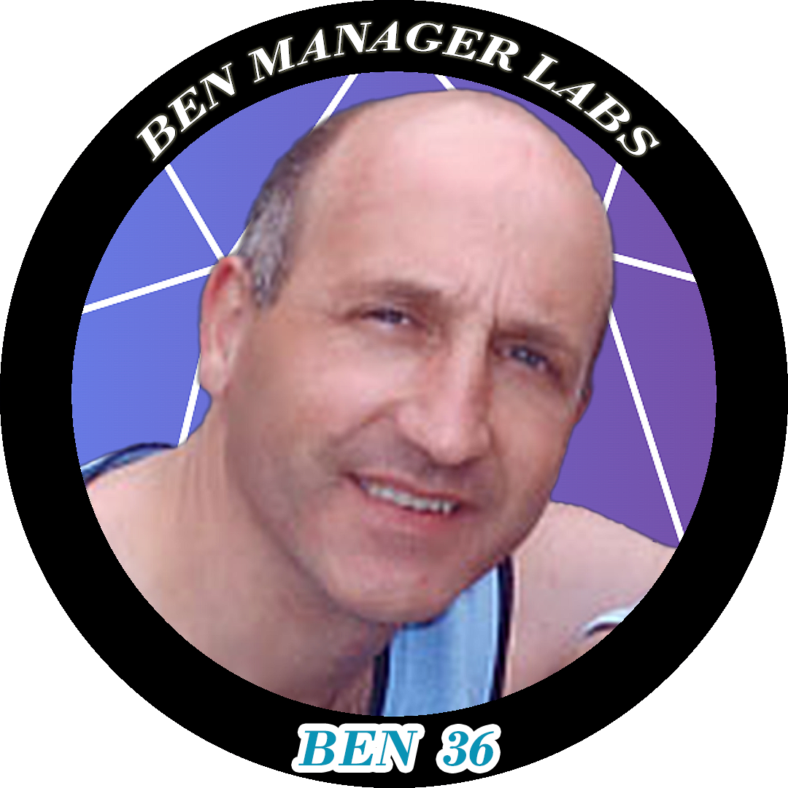
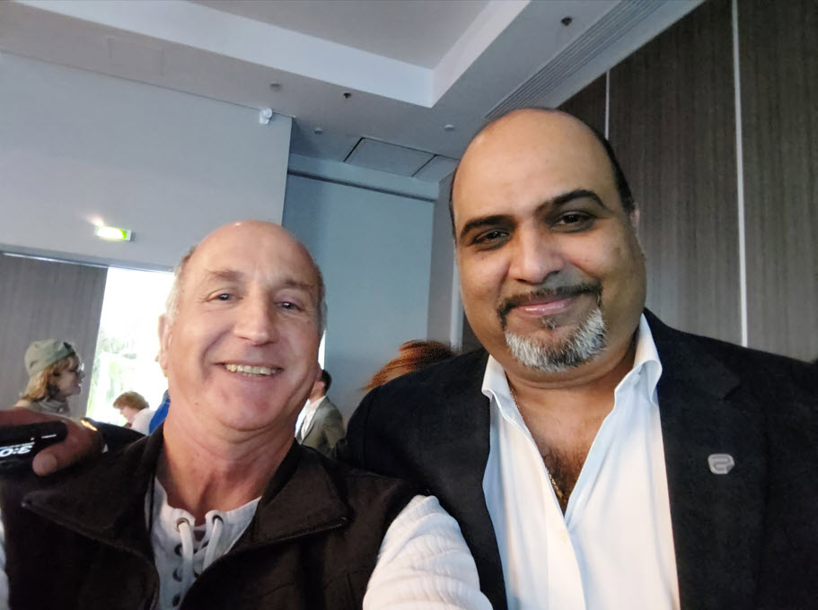
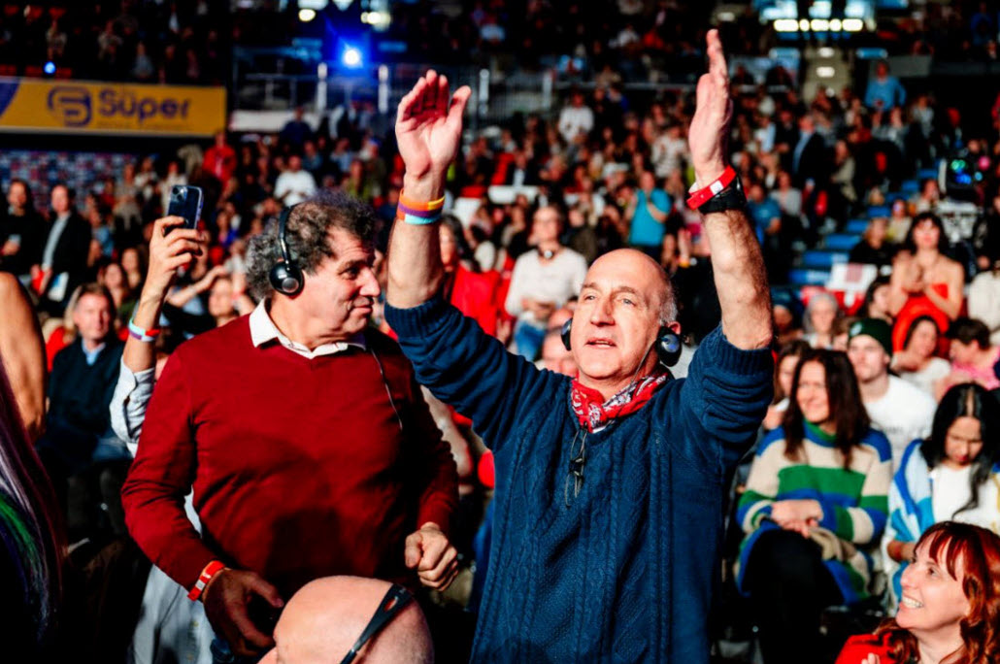
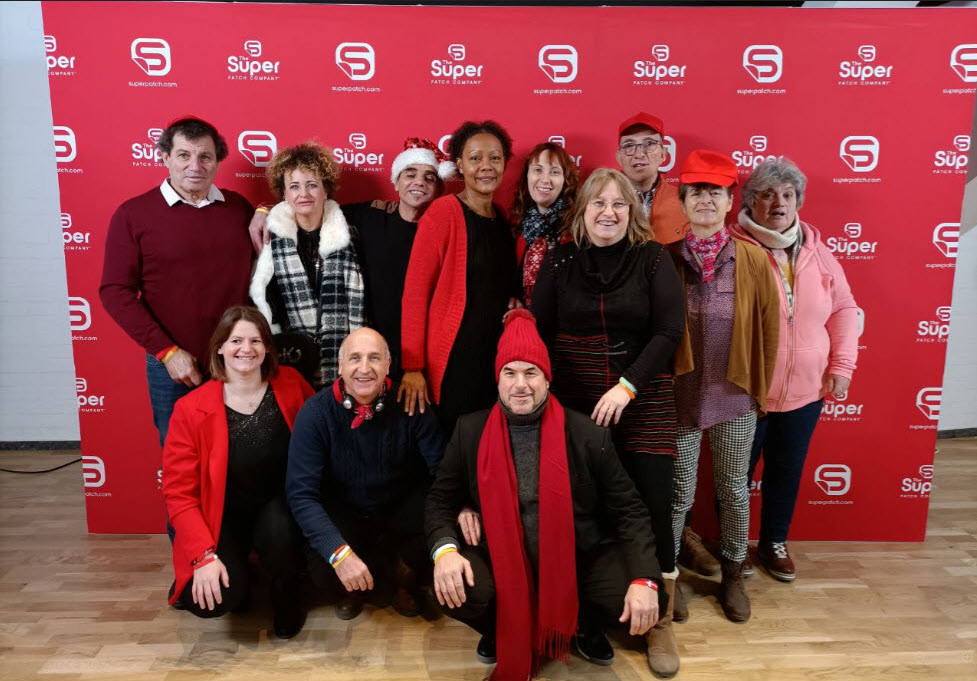
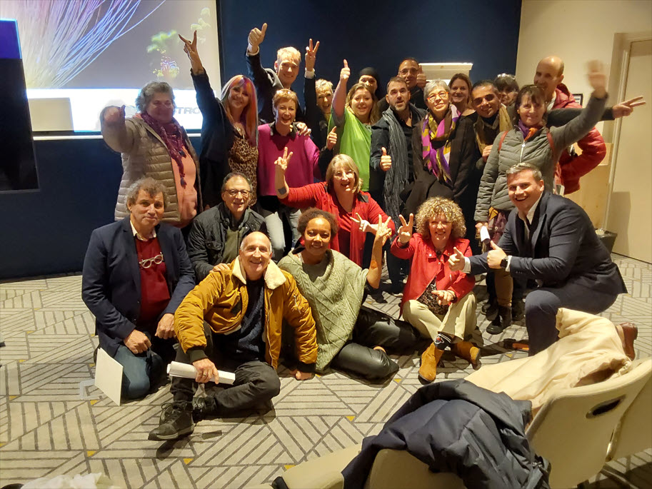
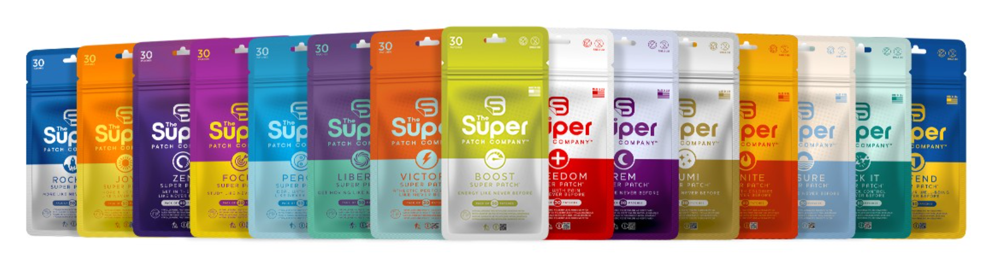

"Pour avoir une forme à toute épreuve, faites du sport et prenez soin de vous et de votre Corps."

Coach Bien-être & Distributeur Indépendant Super Patch
Comment j'ai repris le contrôle de ma santé et de ma vie.
Depuis mon plus jeune âge, j'ai enchaîné les problèmes de santé : allergies, sinusites, et à 4 ans, la maladie de Ménière qui m'a forcé à arrêter le basket. En 2011, un grave accident du travail (700kg sur le dos) a ajouté des vertiges invalidants à mon quotidien. Les médecins m'ont dit : "Il faut vivre avec".
Confiné, je cherchais des opportunités sur le web. Une amie de confiance, Élodie, m'a parlé de Super Patch. Curieux et ouvert, j'ai décidé de la suivre dans l'aventure. C'était le début d'une révolution intérieure et physique.
Depuis 2019, je ne vais plus chez le médecin (sauf pour les bilans) et je ne prends aucun médicament. En retraite, je n'ai jamais été aussi bien ! J'ai repris le sport avec un coach et j'accompagne aujourd'hui les autres vers leur propre transformation.
Notre cerveau apporte à notre corps ce dont il a besoin. Mais aujourd'hui, vu ce que l'on mange, ce que l'on écoute, et qui l'on côtoie, notre cerveau a perdu une partie de ses pouvoirs.
Les patchs nous aident grandement à reconnecter ces signaux, mais ils ne font pas tout. Nous avons besoin de changer notre façon de vivre et d'aider notre corps. En sept ans, j'ai appris à vivre autrement, et quand je vois le résultat aujourd'hui, je suis fier de ce chemin.
Ceux qui m'accompagnent au jour le jour pour rester au top.
Pour la performance, la souplesse et surtout l'équilibre lors de mes séances de kiné et de sport.
Pour maintenir mon homéostasie, garder mes analyses de sang au top et réguler mon organisme en profondeur.
Mon sauveur pour gérer les douleurs résiduelles ou les petits vertiges quand ils tentent de revenir.
Trois piliers complémentaires pour votre bien-être physique, digital et financier.
Solutions digitales et applications innovantes développées avec mon associé Léo pour booster votre productivité.
DécouvrirDes produits de qualité premium (cosmétiques, compléments) à prix accessibles pour toute la famille.
Explorer la boutiqueOpportunités d'investissement et trading. Revenus passifs grâce à la publicité digitale et à l'IA.
Voir les opportunités7 ans d'événements en Europe, de rencontres et d'apprentissages.





Que vous cherchiez à retrouver la santé, à optimiser vos performances ou à bâtir une nouvelle liberté financière, je suis là pour vous accompagner.